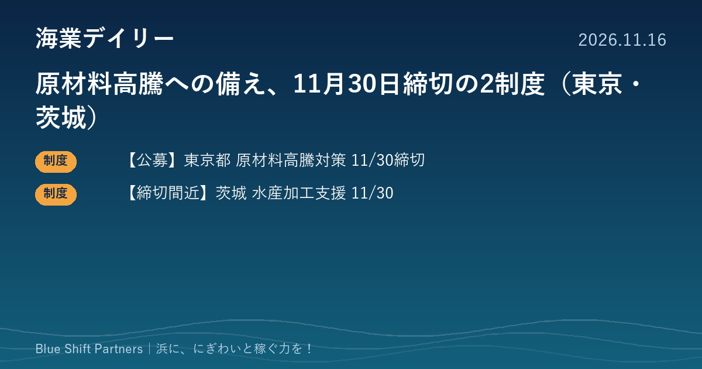

2026.11.16
原材料高騰への備え、11月30日締切の2制度（東京・茨城）

今日は、原材料の値上がりに向き合う事業者向けの公募を2件お届けします。第3回の受付が始まった東京都の助成事業と、締切まで2週間となった茨城県の水産加工業向け支援です。どちらも11月30日が締切です。
【公募】東京都「中東情勢による原材料価格高騰に伴う経営基盤安定化緊急対策事業」第3回
東京都中小企業振興公社が、原材料費の縮減に役立つ設備やシステムの導入などを助成する事業の第3回の申請を受け付けています。対象は都内の中小企業等で、直近決算期の営業利益率が前期より下がっている、次期に下がる見込みである、または直近決算期に営業損失を計上している、のいずれかに当てはまる事業者です。助成率は対象経費の5分の4以内、上限は2,000万円です。受付は11月30日（月）16時までで、申請はJグランツによる電子申請（gBizIDプライムが必要）です。
ここがポイント：都内の水産加工・鮮魚店・飲食店などが要件に当てはまれば、原材料のむだを減らす機械やシステムの導入、販路開拓の費用に充てられる可能性があります（漁協が対象になるかは募集要項で確認が必要です）。gBizIDプライムの取得には1〜3週間程度かかる場合があるため、未取得の場合は早めの手続きが必要です。
出典：公益財団法人東京都中小企業振興公社「中東情勢による原材料価格高騰に伴う経営基盤安定化緊急対策事業」（2026-11-16）
【締切間近】茨城県「水産加工業緊急支援事業」 11月30日締切
茨城県が、県内に水産加工場を持つ中小規模の水産加工業者を対象に、3つの補助メニューを公募しています。①代替魚種への転換や高付加価値商品の製造・開発、②排水処理施設の整備・改修、③加工原材料の高騰にかかる経費の補助で、①②と③の第1次は11月30日（月）17時が締切です。③は第2次（12月1日〜28日）と第3次（1月4日〜29日）も予定されています。申請はいばらき電子申請・届出サービスまたは書面で、予算額に達すると締切前でも受付を終えます。
ここがポイント：不漁や輸入原魚の値上がりで原料の確保に悩む加工場にとって、魚種の切り替えや新商品づくりを後押しする制度です。予算に達すると締切前でも終了するため、検討中の事業者は早めの申請が安心です。
出典：茨城県 農林水産部漁政課「水産加工業緊急支援事業の公募」（2026-11-12）
原材料の値上がりは、浜の加工場にとって「我慢するか、変えるか」の分かれ目です。補助金は、魚種の切り替えや新商品づくりといった“変える”側の一歩を軽くしてくれます。申請書づくりは、自社の原価と売り先を数字で見直す良い機会にもなります。